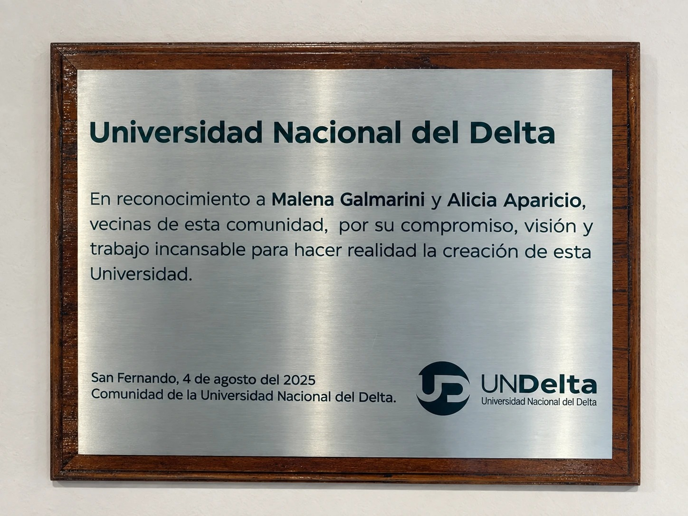

Universitarios por la Libertad · Congreso de la Juventud PBA
COHORTE 2018 → 2024
77
/100
De cada 100 que entraron a una universidad nacional en 2018, 77 no se habían recibido en 2024.
Anuarios de Estadísticas Universitarias (SPU) · 22,7% de egreso ponderado · 59 universidades nacionales
UNIVERSITARIOS POR LA LIBERTAD
1.987.643 estudiantes
93.514 egresados en 2024
No son números nuestros: son los que las propias universidades le informan a la Secretaría de Políticas Universitarias.
EL SISTEMA ENTRA, PERO NO SALE
INGRESANTES NUEVOS
2007
2012
2018
2024
265.558 → 515.640
EGRESADOS
2007
2012
2018
2024
60.972 → 93.514
2007–2024 · suma de las universidades relevadas · Anuarios SPU · cada gráfico con su propia escala
INSCRIPTOS, PERO NO CURSANDO
560.009
estudiantes que se reinscribieron no aprobaron ninguna materia en todo el año: 38,2% de los reinscriptos.
Regulares (2+ materias): 46%
1 materia: 16%
0 materias: 38%
Reinscriptos del último año informado · Anuarios SPU
¿ES NORMAL?
Chile
76
Brasil
38
Argentina
23
Centro de Estudios de la Educación Argentina (CEA), Universidad de Belgrano · cohorte 2019 → 2023
CUÁNTO CUESTA CADA TÍTULO
$58,9 M
por graduado, promedio del sistema (pesos de agosto 2026)
UNA
$667,3 M · 82 egresados
UNTDF
$281,5 M · 82 egresados
UNLC
$233,8 M · 22 egresados
UNdeC
$215,0 M · 84 egresados
UNO
$182,8 M · 80 egresados
Presupuesto ejecutado 2024 / egresados 2024, deflactado por IPC · Anuarios SPU
¿Y A DÓNDE VA LA PLATA?
+18%
cargos docentes (2017 → 2023)
+14%
horas reales (equivalente a tiempo completo)
+24.203 cargos simples contra apenas +629 de dedicación exclusiva.
47 universidades con datos de dedicación · Anuarios SPU
UNIVERSIDADES CREADAS POR EL KIRCHNERISMO
1
2002
1
2003
2
2007
7
2009
6
2014
4
2015
5
2023
En rojo: las 5 sancionadas el mismo día, 28/9/2023, a 2 meses y medio del fin del mandato de Alberto Fernández · egreso ponderado por tamaño
UN CASO · MERLO
Su rector desde 2013 fue Martín Othacehé, hijo del entonces intendente de Merlo.
16.112
estudiantes
80
egresados en 2024
4,2%
se recibe a tiempo
50%
de los reinscriptos, sin materias
Anuarios SPU 2024 · La Nación, Página/12
OTRO CASO · SAN FERNANDO
Creada por ley en 2023. Todavía no informa ni un estudiante al Anuario de la SPU.
Lo que sí tiene: una placa en reconocimiento a Malena Galmarini.

Foto tomada por UPL en la sede de San Fernando · placa fechada el 4/8/2025
AUDITORÍAS
1
facultad de la UBA auditada por la AGN en 10 años (Psicología, ejercicio 2017)
2013
última vez que la SIGEN revisó los fondos de la UBA
No estamos en contra de financiar la universidad. Estamos en contra de financiarla a ciegas.
La Nación (24/04/2024) · El Litoral · Chequeado
QUÉ PROPONEMOS
1
Auditoría externa obligatoria, anual y pública
2
Financiamiento atado a resultados
3
Ninguna universidad nueva sin estudio de demanda
4
Datos abiertos por universidad
5
Ingreso con nivelación real
facugarces.github.io/auditorias-universitarias
Universitarios por la Libertad
@upl_arg